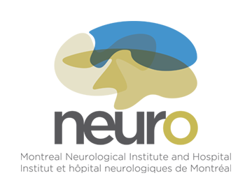
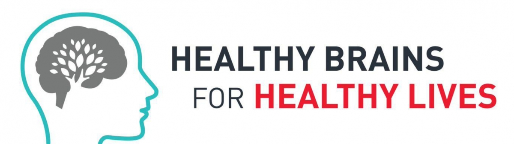

Open Science
Samir Das
Associate Director - Research Software Development
McGill Centre for Integrative Neuroscience
Montreal Neurological Institute

|

|

|
What is Open Science?

As this graph shows, the amount of data collected from
neuroscientific studies is expected to increase exponentially.

Data science
is COMPLEX!
Benefits of Open Science
Increased exposure
Greater collaborations
More citations
Less money spent of patents
New funding opportunities
Improved reproducibility
Enable scientific discovery
...It's the future!
Aled Edwards, CEO
Structural Genomics Consortium
TED Talk: The Need for Biomedical Philanthropy
Data Publishing
- Not Data Sharing -


Open Science Initiatives

|

|
MNI Initiatives
The Neuro (Montreal Neurological Institute-Hospital) integrates patient care with
Open Science research and training, key to advancing science and medicine.
Continue scrolling down to explore some of MNI's Open Science initiatives.


MNI's LORIS and CBRAIN platforms (more on these later) have been tasked with the technical challenges specific to the institutional-level implementation of open data sharing.

Richard Stallman |


|
Healthy Brains, Healthy Lives (HBHL) Initiatives
HBHL seeks to improve the lives of Canadians by advancing our understanding of how the individual brain functions in health and disease, throughout our lives.
Canadian Open Science Neuroscience Platform (CONP) Initiatives
The Canadian Open Neuroscience Platform (CONP) aims to bring together many of the country’s leading scientists in basic and clinical neuroscience to form an interactive network of collaborations in brain research, interdisciplinary student training, international partnerships, clinical translation and open publishing.
Organization for Human Brain Mapping (OHBM) Iniatives
OHBM is an international society dedicated to using neuroimaging to discover the organization of the human brain.
Continue scrolling down to explore some of OHBM's Open Science initiatives.